Inception
Main Content
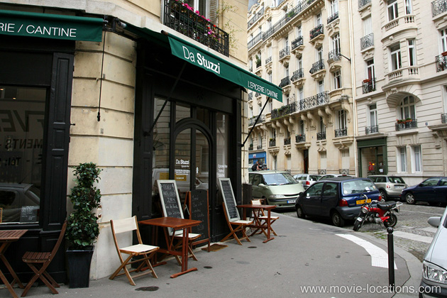
Discover the many places where Christopher Nolan's Inception (2010) was filmed, in Los Angeles; Paris, France; Morocco; Alberta; Japan; and in the UK around London, Bedfordshire and Hampshire.
With the relentless flitting between Los Angeles, Paris, London, Japan, Morocco and Alberta, plus negotiating the various dream levels, Christopher Nolan’s epic is not the simplest film to catalogue. Here goes…
It opens with nothing in the way of explanation, as Cobb (Leonardo DiCaprio) is washed up on the shore beneath a ‘Japanese’ castle. In fact, the castle was added digitally and the shoreline is Abalone Cove Shoreline Park, part of Abalone Cove Ecological Reserve at 5970 Palos Verdes Drive South, Rancho Palos Verdes, on the Pacific coast south of Los Angeles.
The castle interior was created on a soundstage at Warner Bros, its painted gilt design based on Nijo Castle in Kyoto, built in 1603 for the first shogun of the Edo Period. If you want to visit the original, Nijo Castle is a short walk from Kyoto’s Nijojo-mae Station on the Tozai Subway Line.
It appears that Cobb is an ‘extractor’, having learned the ability to enter people’s dreams and extract content. As he’s explaining the concept of ‘extraction’ to the elderly Japanese gentleman, Cobb wakes up in ‘Mombasa, Kenya’ – a sequence filmed in the Old Souk of Tangier, on the northern coast of Morocco. The Souk is the city’s bustling marketplace, which you can see as itself in The Bourne Ultimatum.
There’s going to be a lot of ‘wakes up in…’, and the next awakening is on a Japanese bullet train, really filmed in Japan, though not in ‘Kyoto’ but in Tokyo, as Saito (Ken Watanabe) posits to Cobb the idea of moving from ‘extraction’ to the more dubious and risky ‘inception’.
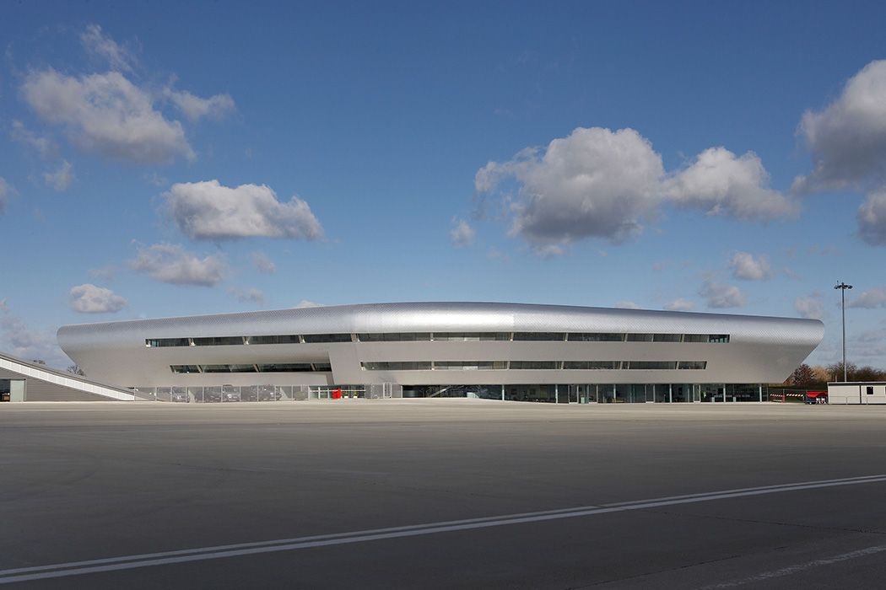
Continuing by air, the sleekly modern ‘Kyoto’ airport at which they land is the new (as in 2006) £10 million operational centre of Farnborough Airport, about 25 miles southwest of London, in Hampshire. It’s the site of the world famous Farnborough International Airshow, a seven-day trade fair for the aerospace industry which has been held here every alternate year since 1948.
Against the better judgement of others, Cobb begins to consider the risky proposition of planting an idea in the mind of Robert Fischer (Cillian Murphy), the heir to a multibillion-dollar oil company.
With their ‘dream environment’ designer Nash (Lukas Haas) having fumbled Saito’s test-run, Cobb needs to recruit a new architect to help build a convincing ‘dream world’.
For this he needs to consult his former tutor – and father-in-law – Miles (Michael Caine) in Paris, at the academy where he teaches. The entrance to the fictitious academy is that of Palais Galliera, 10 Avenue Pierre 1er de Serbie at the corner of Rue du Galliera, on the Left Bank west of Jardins du Trocadero (métro: Iéna or Alma Marceau).
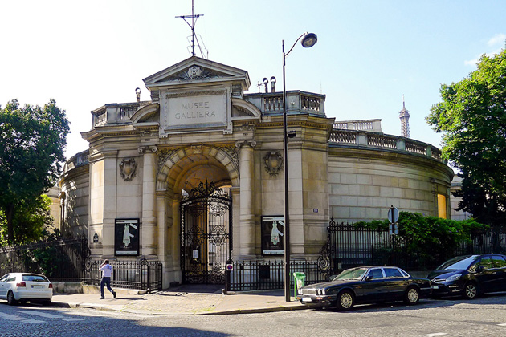
The Palais Galliera houses the Musée de la Mode de la Ville de Paris (City of Paris Fashion Museum), displaying French fashion design and costume from the Eighteenth century to the present. It’s only open when there is actually an exhibition, so keep your eyes open.
Among the 70,000 costumes stored are clothes owned by Marie-Antoinette, Louis XVII and the Empress Josephine but, most importantly for movie fans, the dress worn by Audrey Hepburn in Breakfast at Tiffany's.
The academy’s lecture theatre though, where Cobb tells Miles that he needs to get mysterious ‘charges’ fixed before he can return home, is the Gustave Tuck Lecture Theatre of University College London, in the Wilkins Building, Gower Street, London, WC1.
Built from the proceeds of a donation in the 1920s by the then President of the Jewish Historical Society, Gustave Tuck, the theatre has appeared in many film and TV productions, including 2006 rom-com Starter For 10, with James McAvoy.
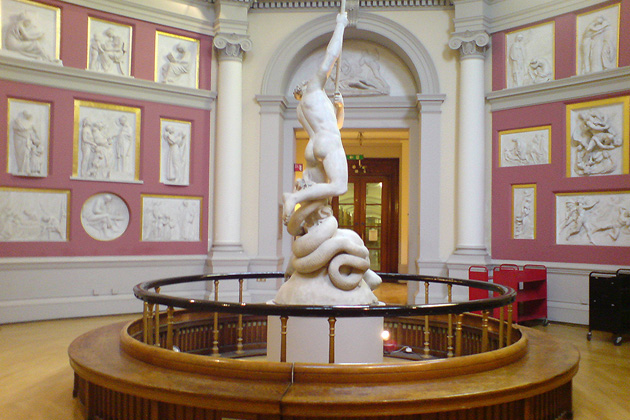
Still in University College, Miles hesitantly introduces Cobb to star student Ariadne (Elliot Page) in UCL’s Flaxman Gallery, which contains sculptures and paintings by artist John Flaxman.
The Gallery is open to the public on weekdays from 1pm to 5pm. You’ll find it in the University’s Main Library, beneath the dome of the famous building that overlooks the Gower Street quadrangle. It’s accessed via the Strang Print Room.
When Arthur (Joseph Gordon-Levitt) arrives at Cobb’s workshop, there’s a neat little cheat. This really is Paris, but the studded metal doorway is a private works entrance to Passy Métro Station on Square Alboni.
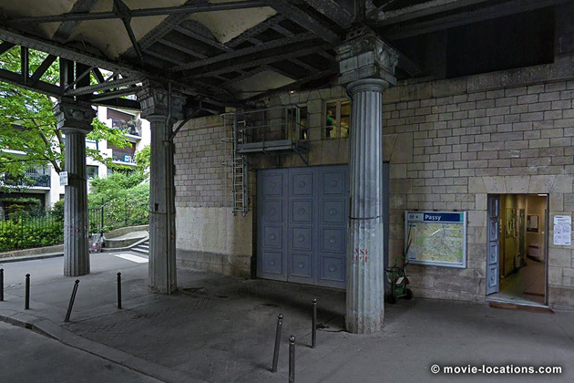
It’s conveniently, and economically for the production, sited at the northern end of the Pont de Bir Hakeim, the double-decker bridge featured so spectacularly a little later in the film. If you’re a visiting movie fan, notice that the doorway stands at the end of the short street where you'll find Marlon Brando’s apartment from Bernardo Bertolucci’s controversial Last Tango In Paris (1972).
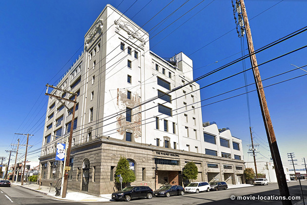
The workshop interior, with those angled skylights, is the top floor of what was the historic 1921 California Walnut Growers Building, now being redeveloped as the Mill Street Lofts, 1745 East 7th Street, in the one-time industrial area east of Downtown Los Angeles. No stranger to the screen, did you recognise it as Cassandra's loft apartment from Wayne’s World?
Suddenly and without explanation, Cobb and Ariadne are sitting outside a Parisian café, as Cobb demonstrates to her that they are able to “share” a dream.
This is back to the French capital. The ‘Café Debussy’ was then Da Stuzzi Patisserie, now a rather nice little terrace restaurant, Il Russo, 6 rue Cesar Franck at the corner of rue Bouchut in the 7th arrondissement. The authorities in Paris don’t allow the use of real explosives, so so the production used high-pressure blasts of nitrogen to blow apart the contents of the surrounding shops and finally the café itself.
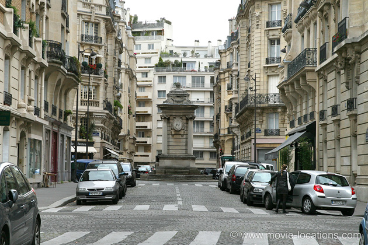
After the dream café explodes, Cobb and Ariadne return to the area, walking along rue Bouchut, back toward the café. In one of the movie’s most celebrated visual coups, Ariadne tests the possibilities of the new dream geometry by spectacularly folding up the rue Cesar Franck.
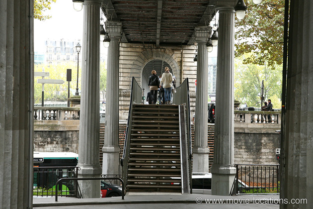
She goes on to ‘create’ the footbridge over Avenue du President Kennedy near Passy station (where the workshop entrance was filmed), and they ascend to the double-decker Pont de Bir Hakeim. Here Ariadne is given a serious warning about the dangers of creating places based on real memories after Cobb’s unconscious mind recognises the bridge and and allows a projection of his deceased wife, Mal (Marion Cotillard), to intrude.
The bridge is visually striking and has been featured on screen several times, including in two Louis Malle movies – 1958’s l’Ascenseur Pour l’Echafaud and 1960 comedy Zazie Dans Le Métro, more recently in National Treasure: Book of Secrets but, most famously, in Bertolucci’s Last Tango In Paris, as the approach to Brando’s apartment.
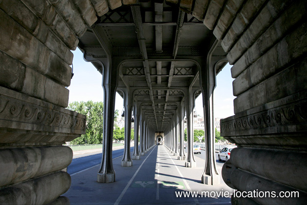
It’s back to ‘Mombasa’/Tangier to recruit forger Eames (Tom Hardy), where the foot chase once again utilises the maze of narrow streets and alleyways of Tangier’s historic Souk.
The huge glass-fronted atrium in which Arthur demonstrates ‘paradoxical architecture’ to Ariadne in the form of of the ‘Penrose steps’ (based on the drawings of never-ending staircases by artist MC Escher) is the lobby of Samsung House, 2000 Hillswood Drive, Lyne southwest of Chertsey in Surrey. Keeping CGI to a minimum, the illusion was achieved by adding false steps to the building’s existing stairway.
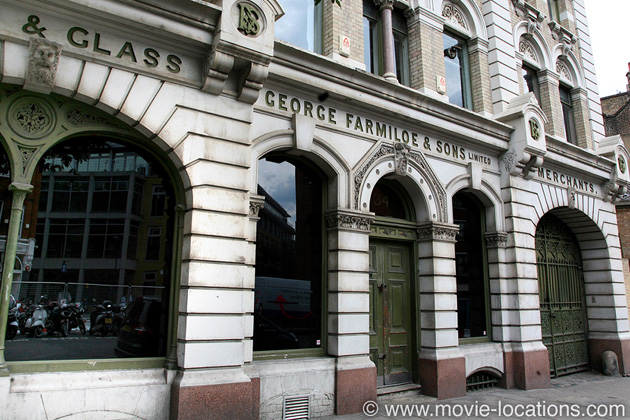
The ‘Mombasa’ pharmacy of Yusuf (Dileep Rao), where the powerful sedative that will allow three levels of dreaming is obtained, is a Christopher Nolan favourite. It’s the interior of the Farmiloe Building, St John Street, in Smithfield, London EC1, a Victorian office and warehouse building which was previously used as ‘Gotham’ police station in Batman Begins, The Dark Knight and The Dark Knight Rises.
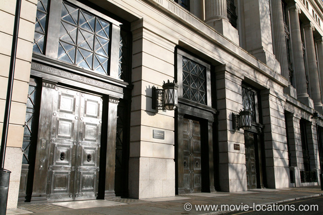
When Eames contrives a meeting with Fischer Sr’s right-hand man Browning (Tom Berenger), in order to observe first-hand the father-son dynamic the team hopes to exploit, the old-world suite of the dying Maurice Fischer (Pete Postlethwaite) is one of the grand, mahogany-panelled Heritage Rooms of Victoria House in Bloomsbury Square, London WC1.
This impressive Grade II listed building, occupying a prominent site bounded by Bloomsbury Square to the west and Southampton Row to the east, was built in the 1920s for the Liverpool Victoria Friendly Society.
It’s a versatile space – it was used as the bank in Jonathan Glazer’s surreal 2000 caper Sexy Beast, more recently became the ‘Hotel Grushinski’ in Jack Ryan: Shadow Recruit and the exterior of 'Selfridge' department store, where Diana Prince (Gal Gadot) gets kitted out with a more appropriate wardrobe, in Patty Jenkins's Wonder Woman.
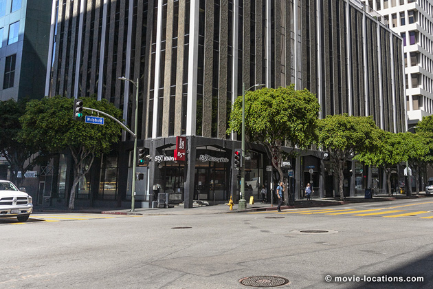
Asleep in Cobb’s workshop, the team gathers in a shared dream to discuss how to ‘plant’ an idea into the head of Fischer Jr. The deserted city centre is the normally busy junction of Wilshire Boulevard and South Hope Street, in the heart of Downtown Los Angeles. This seems to be one small section of LA the team has created as, no matter how much they appear to travel around the city, they inevitably end up at this same spot.
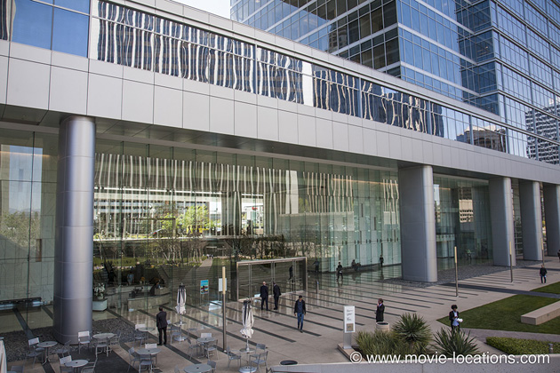
The glass-fronted modern hotel lobby, where they figure out how to get the minimum of ten hours sleeping time needed to get into Robert Fischer’s mind by taking advantage of a long-haul flight, is the entrance to the Creative Artists Agency Building, 2000 Avenue of the Stars in Century City, Los Angeles.
You might recognise it as the place where Ken discovers the patriarchy in Barbie, as Amy Adams' art gallery in Nocturnal Animals, as a futuristic 'San Francisco' where Khan (Benedict Cumberbatch) crashlands his ship in Star Trek Into Darknessor as the office of The Daily Sentinel in Michel Gondry’s 2011 version of The Green Hornet, with Seth Rogen.
The Century City complex, southwest of Beverly Hills, occupies what used to be the old 20th Century-Fox backlot and still sees its share of movie action – you’ll find the tower of ’Nakatomi Plaza’ from Die Hard here, too.
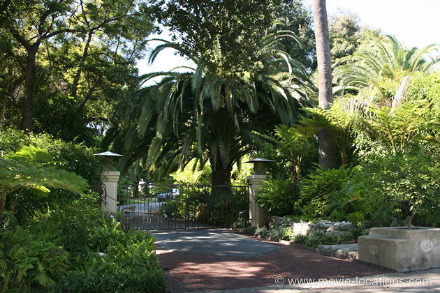
The shared dreams are being increasingly compromised by the unpredictable intrusion of Cobb’s dead wife. Determined to discover the unspoken secret disturbing Cobb’s unconscious mind, Ariadne inserts herself into his private dream, meeting the enigmatic Mal in Cobb’s elegant home. The house, with its striking wood features and stained glass, is 215 South Grand Avenue, a 1908 Greene & Greene craftsman-style home in the western reaches of Pasadena.
The property, which was put on the market in 2001 for $2.5 million, is a private home and, apart from the gates, there’s not a great deal to be seen from the street.
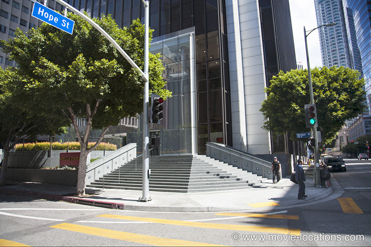
As the team begins its epic snooze aboard the airliner, they find themselves in a dream state picking up Yusuf in a rain-drenched LA at the same Wilshire-Hope junction where they earlier met up. Commandeering a yellow cab, they drive away, but when they’re flagged down by Fischer, they’re back at the flight of steps on exactly the same spot.
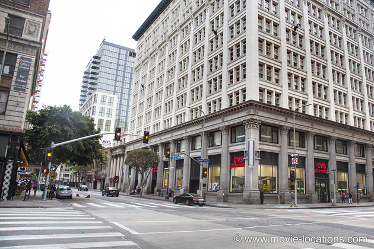
Cobb and Ariadne, in the following car, are startlingly struck by a speeding railway engine hurtling north along South Spring Street and crashing through traffic at 7th Street, Downtown LA. No more than a product of Cobb’s troubled subconscious, the train barrels off along Spring Street to 6th Street.
Once again, Christopher Nolan ensures a convincing reality by having the shell of a railway engine physically constructed and mounted on the chassis of a tractor trailer.
The mission becomes more problematic when Fischer’s well-trained mind conjures up a posse of armed defenders, resulting in a messy shoot-out nearby on West 7th Street at Broadway.
The deserted warehouse in which Cobb and the team temporarily hide is the SCS Warehouse, 516 South Anderson Street opposite Willow Street East. It's in the industrial area east of Downtown LA, across the Los Angeles River, which is now being redeveloped as an arty enclave. The warehouse complex was more recently used in DC’s 2020 Birds of Prey.
Here Cobb warns Ariadne about the dangers of becoming trapped in ‘limbo’, revealing how he and Mal spent 50 years marooned in a deep dream state, where they created their own city.
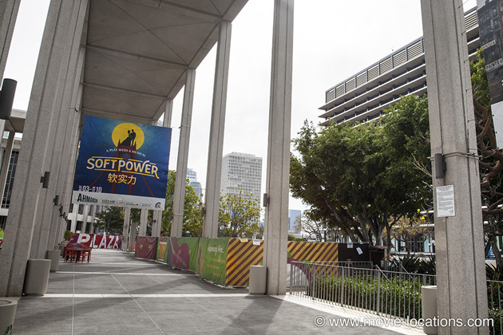
The ‘dream city’ is again Downtown Los Angeles, but the modern developments just to the north in the Civic Center area. Cobb and Mal stroll along the columned walkway on the west side of the Ahmanson Theatre, part of the Music Center complex, on North Hope Street south of West Temple Street.
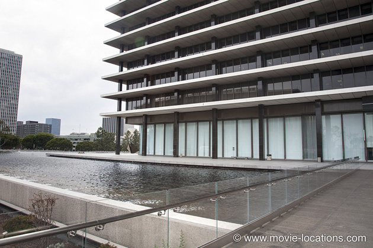
This virtual city is revisited later by Cobb accompanied by Ariadne when they venture to the lowest dream state to confront Mal. From this covered walkway, the pair discover a strange area of semi-submerged buildings – recreated from Cobb and Mal’s shared past.
In fact, the waterway really is nearby, just across Hope Street from the Music Center.
It’s the ornamental moat surrounding the John Ferraro Building, the office of the Los Angeles Department of Water and Power. The water is real enough, but the old houses were added digitally. The building was also seen as the office of prosecutor Kim Basinger in Shane Black's 2016 The Nice Guys , with Ryan Gosling and Russell Crowe.
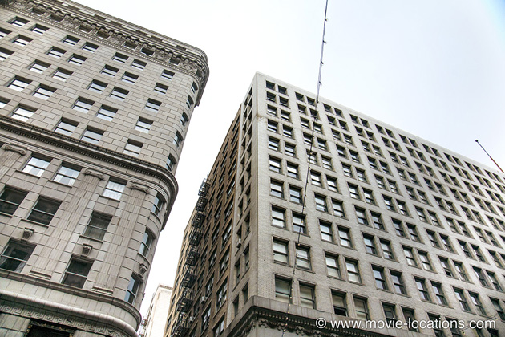
The prolonged dream state left Mal doubting her present reality and wanting to die, believing she’d wake up back in their invented city.
The ‘hotel suite’ where Mal sits on a window-ledge asking Cobb to join her in a “leap of faith” is above Frank Court at West 5th Street. It’s in the Chester Williams Building, 215 West 5th Street, Downtown LA, which you might remember as the apartment block of Karen (N’Bushe Wright) in the original 1998 Blade, and the entrance of which became a subway station for Phone Booth. It stands directly opposite John Doe’s apartment building from Se7en.
The CAA Building back in Century City now provides the hotel bar and lobby where Cobb, posing as ‘Mr Charles’, convinces Fischer that he’s entered his dream as ‘subconscious security’.
The ‘hotel’, where the plan is to turn Fischer against his trusted aide Browning, is a studio set. The corridors and bedroom were built in one of the two huge airship hangars at Cardington, three miles south of Bedford in Bedfordshire.
The largest structures of their kind in Europe, the Cardington Hangars obviously suit Christopher Nolan’s style of epic film-making, as sets for Batman Begins, The Dark Knight and The Dark Knight Rises were also built here.
Of course, there’s no hotel at all. It’s another level of dreaming by the sleeping team who are being driven by Yusuf through Los Angeles, past – yes – the Wilshire-Hope junction again.
Fischer is taken to a risky lower level of dreaming to retrieve a secret hidden in a mountain fortress. This was constructed at at the snowy Fortress Mountain ski resort at Kananaskis, about 55 miles west of Calgary, in Alberta, Canada.
Coincidentally, Leonardo DiCaprio returned to the same area to film scenes for Alejandro G Iñárritu's The Revenant.
The elastic nature of dream-time means that the whole mission takes place in the few seconds between Yusuf’s van careering off a transporter bridge and its hitting the water, the physical shock intended to awake the team.
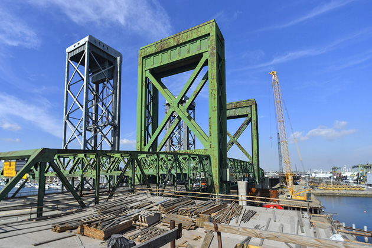
The bridge is the Commodore Schuyler F Heims Draw Bridge, spanning the Cerritos Channel, connecting Terminal Island to Long Beach and Wilmington, south of LA. The same bridge turns up – supposedly in ‘Washington DC’ – during the freeway chase in Transformers: Dark Of The Moon.
Finally, it’s back to the UK to find ‘LAX’, 'Los Angeles International Airport', where Cobb is met by Miles as he arrives in the 'US' cleared of all charges. With admirable economy, the ‘arrivals lounge’ once again makes use of Farnborough Airport in Hampshire.
Visit Info
Visit The Film Locations
California | Los Angeles
Visit: Los Angeles
Flights: Los Angeles International Airport (LAX), 1 World Way, Los Angeles, CA 90045 (tel: 424.646.5252)
Travelling around: Los Angeles Metro
Visit: Abalone Cove Ecological Reserve at 5970 Palos Verdes Drive South, Rancho Palos Verdes, CA 90275 (tel: 310.377.1222)
Visit: the Music Center, 135 North Grand Avenue, Los Angeles, CA 90012 (tel: 213.972.7211)
Visit: the Ahmanson Theatre, 135 North Grand Avenue, Los Angeles, CA 90012 (tel: 213.628.2772)
France
Visit: France
Visit: Paris
Flights: Charles De Gaulle International Airport, 95700 Roissy-en-France, France (tel: 33.1.70.36.39.50)
Travel around: Paris Metro
Visit: Palais Galliera, 10 Avenue Pierre 1er de Serbie, 75016 Paris (tel: +33.1.56.52.86.00)
UK | London
Flights: Heathrow Airport; Gatwick Airport
Visit: London
Travelling: Transport For London
Visit: the Flaxman Gallery, UCL Art Museum, South Cloisters, University College London, Gower Street, London WC1E 6BT (tel: 020.7679.2540)
UK | Bedfordshire
Visit: Bedfordshire
UK | Hampshire
Visit: Hampshire
Visit: Farnborough Airport
Visit: Farnborough International Airshow, Farnborough Aerodrome, ETPS Road, Farnborough, Hants GU14 6FD (tel: 0844.858.6752)
UK | Surrey
Visit: Surrey
Morocco
Visit: Morocco
Visit: Tangier
Flights: Tangier Ibn Battouta Airport, Boukhalef, Tanger (tel: +212.5393.93649)
Alberta
Visit: Alberta
Visit: Kananaskis
Flights: Calgary International Airport, 2000 Airport Road NE, Calgary, AB T2E 6Z8 (tel: 403.735.1200), around 55 miles
Visit: Fortress Mountain Ski Resort, Kananaskis Village (tel: 403.808.5972)
Japan
Visit: Japan
Visit: Kyoto
Kyoto Flights, International: Kansai International Airport, 1 Senshukukokita (tel: +81.72.455.2500)
Kyoto Flights, Domestic: Osaka International Airport, 3 Chome-555 Hotarugaike Nishimachi (tel: +81.6.6856.6781)
Visit: Nijo Castle, 541 Nijojocho, Nakagyo Ward, Kyoto, Kyoto Prefecture 604-8301 (tel: +81.75.841.0096)